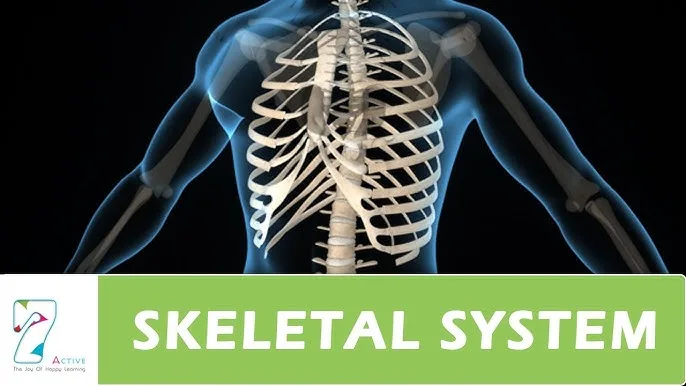
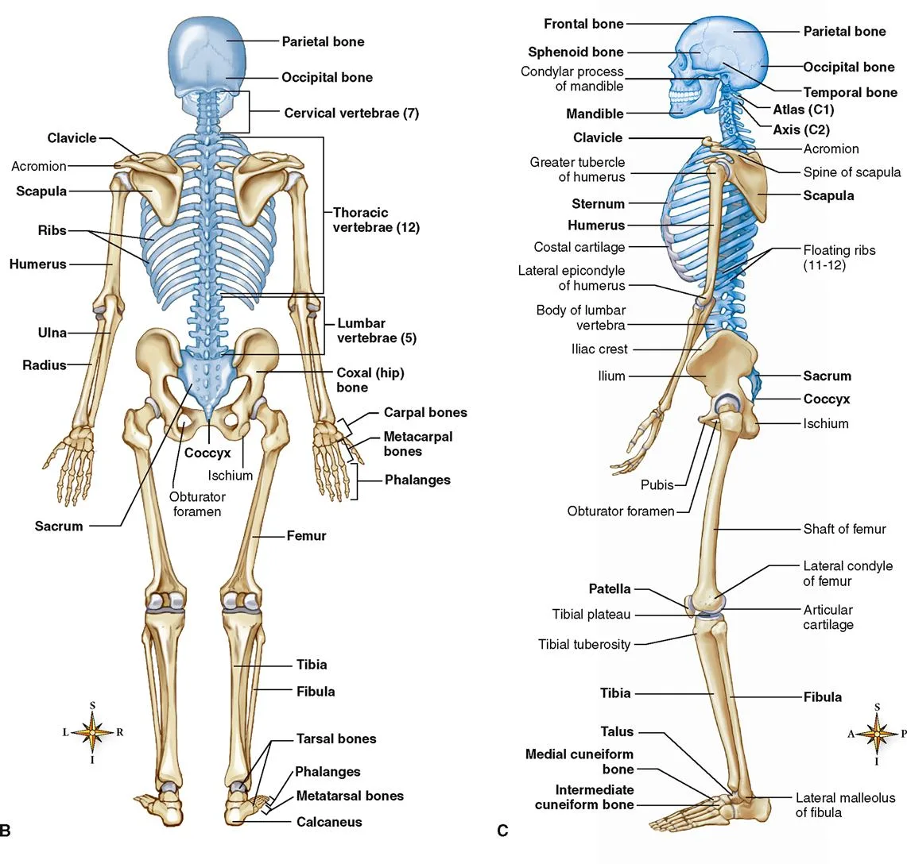
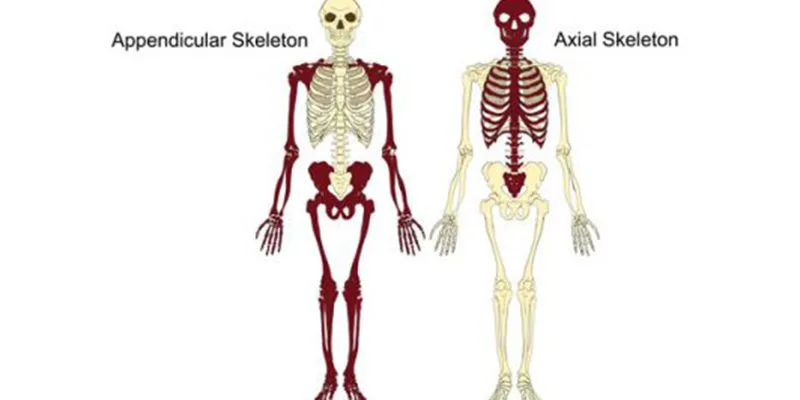
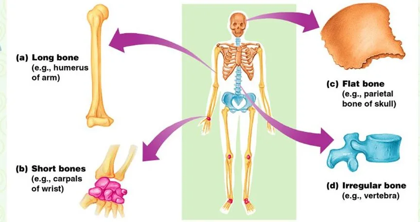
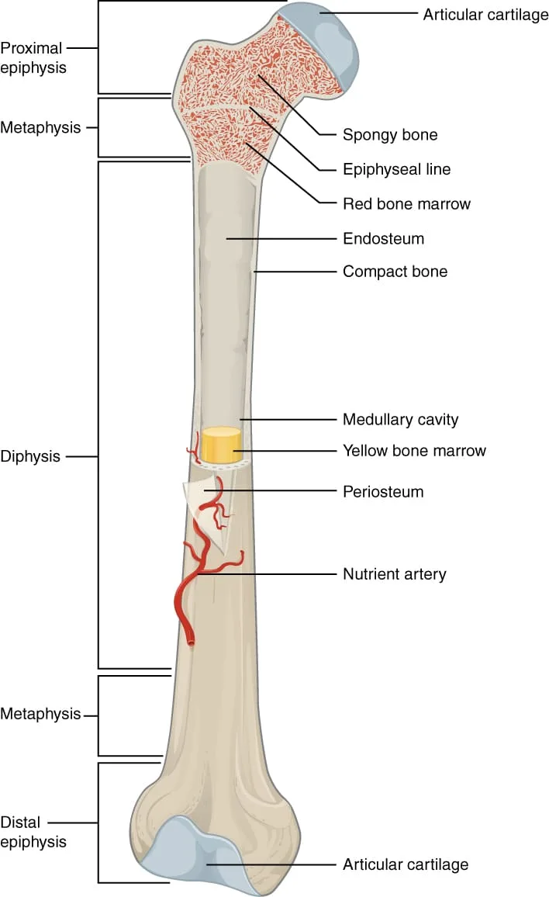
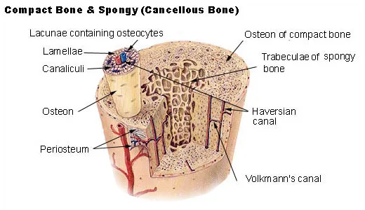
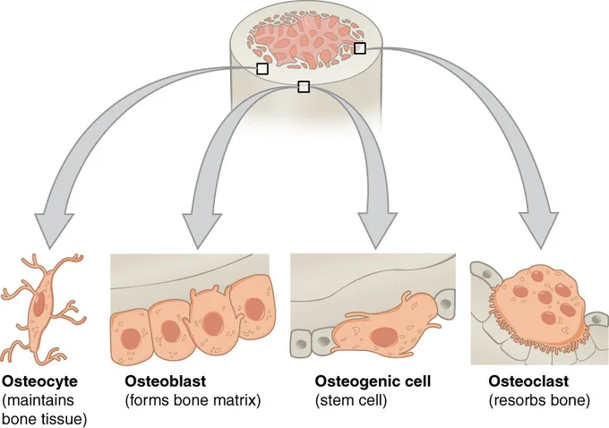
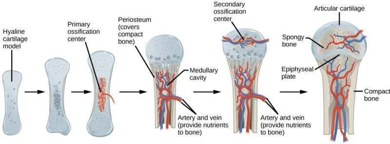

Expanded Nursing Uganda Explanation
Skeletal system and detailed diagrammatic description should be understood beyond a short definition. Link the concept to patient history, focused assessment, common risks, nursing priorities, documentation and evaluation of outcomes.
Contents — 21 sections (tap to expand)
01 Nursing Uganda Snapshot
The skeletal system is best revised as a living support, protection, movement, blood-forming and mineral-storage system. A nurse uses it to understand pain, deformity, movement limits, neurovascular risk and safe mobility.
02 Build The Idea
Start with normal bone and joint function, then ask what changes when injury, inflammation, infection, degeneration or mineral loss occurs.
- Framework: bones support posture and protect organs.
- Movement: muscles pull on bones across joints.
- Blood and minerals: marrow forms blood cells while bone stores calcium and phosphate.
- Repair: healing depends on alignment, blood supply, nutrition, immobilization and infection control.
03 Ward Mode
On the ward, skeletal knowledge becomes practical when a patient cannot walk, has pain after trauma, has a cast, or reports numbness and swelling.
- Check pain, deformity, swelling, skin colour and temperature.
- Compare movement, sensation and pulse on both sides.
- Support the part before moving the patient.
- Escalate severe pain, numbness, cold limb or suspected spinal injury.
04 Red Flags
- Increasing pain under a cast.
- Numbness, tingling, blue or cold fingers or toes.
- Loss of movement after trauma.
- Back or neck injury with weakness or altered sensation.
- Open wound with visible bone or severe bleeding.
05 Patient Teaching
- Report severe pain, numbness, swelling, blue colour or inability to move digits.
- Keep casts dry and avoid inserting objects under them.
- Take calcium/protein-rich foods where appropriate and follow mobility instructions.
06 Exam Answer Map
- Define the skeletal system.
- List functions: support, protection, movement, blood formation, mineral storage.
- Classify bones and joints.
- Add nursing relevance: assessment, fractures, mobility and complications.
07 Introduction to the Skeletal System and its Components
The skeletal system is the body's internal framework, providing structure, support, and protection. It's a dynamic and living system, not just dry bones in a museum! It's primarily composed of specialized connective tissues. In an adult human, the skeletal system typically consists of 206 bones, along with a network of cartilages, joints, and ligaments that connect them and facilitate movement.
Understanding the skeletal system means understanding more than just bones:
- Bones: These are the primary organs of the skeletal system. They are rigid structures that form the framework, provide attachment points for muscles, and protect internal organs.
- Joints (Articulations): These are the sites where two or more bones meet. Joints are crucial for holding the skeleton together and, importantly, allowing for varying degrees of movement between bones.
- Cartilages: Flexible connective tissue found in various parts of the skeletal system. Articular cartilage covers the ends of bones within joints to reduce friction. Cartilage also connects ribs to the sternum (costal cartilage), forms the nose, ears, and structures like intervertebral discs and menisci.
- Ligaments: Tough, fibrous bands of dense regular connective tissue that connect bone to bone . They reinforce joints and provide stability, limiting excessive or abnormal movements.
- Tendons: While part of the muscular system, tendons are dense regular connective tissue bands that connect muscle to bone . They are essential for transmitting the force of muscle contraction to the skeleton to produce movement.
08 Clinical Extension: Fractures and Skeletal Injuries
A fracture is a break in the continuity of bone. In nursing practice it is studied with the skeletal system because bone structure, blood supply, periosteum, joints, muscles and nerves all influence the patient's pain, deformity, movement, circulation and healing.
- Common causes: direct trauma, twisting force, falls, road traffic injury, violent muscle contraction, repeated stress, osteoporosis, bone tumour, infection, malnutrition and ageing.
- Closed fracture: the bone is broken but the skin remains intact. Infection risk is lower, but bleeding, swelling and neurovascular compromise may still be serious.
- Open fracture: the wound communicates with the fracture site. Treat it as contaminated, cover with a sterile dressing, prevent further movement and refer urgently.
- Complete and incomplete fractures: complete fractures pass through the full width of bone, while incomplete fractures include greenstick and hairline injuries, especially in children or stress injuries.
- Pattern classification: transverse, oblique, spiral, comminuted, impacted, depressed, avulsion, compression and pathological fractures. The pattern helps predict stability and treatment.
- Priority assessment: pain, swelling, bruising, deformity, shortening, abnormal movement, crepitus, loss of function, wounds, bleeding and the mechanism of injury.
- Neurovascular checks: assess colour, warmth, capillary refill, distal pulses, sensation, movement, increasing pain and tightness before and after splints, casts or traction.
- Immediate nursing care: maintain airway and circulation if trauma is severe, control bleeding, immobilize the limb in the position found, elevate if appropriate, apply cold packs where safe, give analgesia as prescribed and prepare for X-ray or referral.
- Complications to remember: shock, haemorrhage, fat embolism, compartment syndrome, infection, delayed union, non-union, malunion, avascular necrosis, pressure injury under a cast and deep vein thrombosis.
- Patient teaching: keep the cast dry, do not insert objects under the cast, return urgently for numbness, blue fingers or toes, severe pain, swelling, foul smell, fever or inability to move digits.
09 Functions of the Skeletal System
The skeletal system performs several vital functions beyond just providing shape:
- Support: The bones form the rigid internal framework that supports the weight of the entire body, holds the soft tissues and organs in place, and maintains our overall shape and structure.
- Protection: Bones create protective enclosures for delicate and vital internal organs. The skull protects the brain, the vertebral column protects the spinal cord, the ribs and sternum protect the heart and lungs, and the pelvis protects the pelvic organs.
- Movement: Bones act as levers. Skeletal muscles attach to bones via tendons, and when these muscles contract, they pull on the bones, causing movement at the joints. The skeletal and muscular systems work together as the musculoskeletal system to enable locomotion and manipulation.
- Storage of Minerals and Fats: Bone tissue is the body's main reservoir for essential minerals, particularly calcium and phosphorus. These minerals are crucial for nerve impulse transmission, muscle contraction, blood clotting, and many other metabolic processes. Hormones regulate the release and storage of these minerals in bone to maintain mineral balance in the blood. Additionally, the internal cavities of long bones store fat in the form of yellow bone marrow, serving as an energy reserve.
- Blood Cell Formation (Hematopoiesis): The production of all blood cells (red blood cells, white blood cells, and platelets) occurs within the red bone marrow, which is housed in the spongy bone cavities of certain bones. This is a critical life-sustaining function of the skeletal system.
- Hormone Production: Bones are also recognized as playing an endocrine role. Osteoblasts produce the hormone Osteocalcin , which contributes to bone formation and seems to influence insulin secretion, glucose regulation, and energy metabolism.
10 Divisions of the Skeleton
For ease of study and to reflect functional differences, the adult human skeleton is divided into two main parts:
- Axial Skeleton: This part forms the long axis of the body, providing support and protection for the head, neck, and trunk. It includes the bones of the Skull , the Vertebral Column (spine), and the Bony Thorax (rib cage). The axial skeleton is primarily involved in protection, support, and weight-bearing. It consists of 80 bones.
- Appendicular Skeleton: This part consists of the bones of the Upper Limbs (arms, forearms, wrists, hands), the Lower Limbs (thighs, legs, ankles, feet), and the Girdles (Pectoral/shoulder girdle and Pelvic/hip girdle) that attach the limbs to the axial skeleton. The appendicular skeleton is primarily involved in locomotion and manipulation of the environment. It contains 126 bones.
11 Bone Structure, Classification, and Anatomy of a Long Bone
Bones are complex organs, varying in shape and size, but sharing common structural features and composed of similar tissues.
All bones in the body are composed of two types of osseous (bone) tissue:
- Compact Bone (Cortical Bone): This is the dense, hard, and solid outer layer of bones. It looks smooth and homogeneous to the naked eye. Compact bone forms the shaft of long bones and the thin outer shell of all other bones. It provides the bone with significant strength and resistance to bending and impact forces.
- Spongy Bone (Cancellous Bone or Trabecular Bone): Located internal to compact bone, particularly in the ends of long bones and filling most of the volume of short, flat, and irregular bones. It consists of a network of thin, interconnected bony struts and plates called trabeculae . The spaces between the trabeculae are filled with red or yellow bone marrow. Spongy bone is lighter than compact bone and helps bones withstand stress applied from multiple directions.
Bones are grouped into four primary categories based on their external shape, which often reflects their functional role:
- Long Bones: Characterized by having a shaft that is significantly longer than its width. They typically have enlarged ends. Long bones function as levers, crucial for movement. Examples include most bones of the arms, legs, fingers, and toes (e.g., Femur, Humerus, Tibia, Fibula, Radius, Ulna, Metacarpals, Metatarsals, Phalanges).
- Short Bones: Generally cube-shaped, with roughly equal dimensions in length, width, and height. They provide stability and support, and contribute to small, complex movements. Found in the wrist (Carpals) and ankle (Tarsals). A special type, Sesamoid Bones , are small, round bones embedded within tendons (like the Patella or kneecap).
- Flat Bones: Thin, flattened, and often curved bones. They consist of two thin layers of compact bone sandwiching a layer of spongy bone (this spongy layer is called the diploe in cranial bones). Flat bones are important for protection (e.g., skull protecting the brain) and provide large surface areas for muscle attachment. Examples include most bones of the skull (frontal, parietal, occipital), the sternum (breastbone), ribs, and scapulae (shoulder blades).
- Irregular Bones: Bones with complex, unique shapes that do not fit neatly into the other categories. Their varied shapes are adapted for specific functions like providing multiple attachment points, forming complex joints, or offering specialized protection. Examples include the vertebrae (bones of the spinal column), the hip bones (ilium, ischium, pubis), and many facial bones.
Long bones, as the primary levers for movement, have several distinct regions and features:
- Diaphysis: This is the main, elongated shaft or body of the long bone. It is primarily constructed of a thick collar of compact bone surrounding a central cavity.
- Epiphysis (plural: Epiphyses): These are the enlarged ends of the long bone. Each long bone has a proximal epiphysis (nearer to the body trunk) and a distal epiphysis (further from the body trunk). The epiphyses have an outer shell of compact bone enclosing an interior filled with spongy bone. Joint surfaces of the epiphyses are covered with articular cartilage.
- Metaphysis: The narrow section of a long bone between the epiphysis and the diaphysis. In growing bone, this region contains the epiphyseal plate.
- Epiphyseal Line: In adult bones, the epiphyseal line is a remnant of the Epiphyseal Plate (Growth Plate) . The epiphyseal plate was a disc of hyaline cartilage in growing bones responsible for increasing bone length. Once longitudinal bone growth is complete (usually by late adolescence), the cartilage ossifies and is replaced by bone, leaving behind the epiphyseal line.
- Articular Cartilage: A layer of smooth, slippery hyaline cartilage covering the external surface of the epiphyses where they form a joint with another bone. It reduces friction and cushions stress during movement.
- Periosteum: A tough, fibrous, double-layered membrane covering the external surface of the diaphysis and parts of the epiphyses, except for the articular cartilage. The outer fibrous layer provides protection and attachment points for tendons and ligaments. The inner osteogenic layer contains osteoblasts and osteoclasts crucial for bone growth in width and repair. It is richly supplied with blood vessels and nerves.
- Endosteum: A delicate connective tissue membrane that lines the internal surfaces of the bone, including the surfaces of the trabeculae of spongy bone and the inside of the medullary cavity and central canals. It also contains osteoblasts and osteoclasts.
- Medullary Cavity (Marrow Cavity): The central, hollow cavity within the diaphysis of long bones. In adults, this cavity is primarily filled with yellow bone marrow (fat). In infants, it contains red bone marrow for blood cell production.
12 Microscopic Anatomy of Compact Bone, Bone Cells, and Remodeling
Looking at bone tissue under a microscope reveals its organized structure, which contributes to its strength and dynamic nature.
Compact bone tissue is not solid throughout; it is organized into structural units called Osteons (also known as Haversian systems). These are elongated, cylindrical structures that run parallel to the long axis of the bone, acting like tiny weight-bearing pillars. An osteon consists of:
- Central (Haversian) Canal: A channel running through the center of each osteon. It contains blood vessels (capillaries and venules) and nerve fibers that supply the osteon.
- Lamellae: Concentric rings of hard, calcified bone matrix that surround the central canal, like the rings of a tree trunk. Collagen fibers within the lamellae run in different directions in adjacent layers, greatly increasing the bone's resistance to twisting forces.
- Lacunae (Singular: Lacuna): Small cavities or spaces located at the junctions between the lamellae. Each lacuna is occupied by a mature bone cell, an osteocyte.
- Canaliculi (Singular: Canaliculus): Tiny, hair-like canals that radiate outwards from the lacunae, connecting them to each other and eventually to the central canal. These canals allow osteocytes to receive nutrients and oxygen from the blood vessels in the central canal and dispose of waste products via diffusion. They also allow osteocytes to communicate with each other through gap junctions.
- Perforating (Volkmann's) Canals: Canals that run perpendicular (at right angles) to the central canals and the long axis of the bone. They connect the blood and nerve supply of the periosteum to those in the central canals and the medullary cavity.
Bone tissue is formed, maintained, and remodeled by the activity of three primary types of bone cells:
- Osteogenic Cells: These are mitotically active stem cells found in the periosteum and endosteum. They are the precursor cells that differentiate into osteoblasts.
- Osteoblasts: These are the "bone-building" cells. They are actively secretory cells that produce and secrete the organic components of the bone matrix, primarily osteoid (which consists of collagen fibers and ground substance). Osteoblasts play a crucial role in bone formation (ossification). When osteoblasts become surrounded by the matrix they've secreted, they mature into osteocytes.
- Osteocytes: Mature bone cells that are the main cells in bone tissue. They reside in lacunae within the calcified matrix. Osteocytes maintain the bone matrix and play a role in sensing mechanical stress (like weight-bearing or muscle pull) on the bone. They communicate this information to other bone cells, helping to regulate bone remodeling.
- Osteoclasts: Large, multinucleated cells that are responsible for bone resorption (breaking down the bone matrix). They secrete digestive enzymes and acids that dissolve the inorganic mineral salts and break down the organic matrix. This process is essential for bone remodeling, releasing calcium into the blood, and bone repair. Osteoclasts are derived from the same precursor cells that give rise to macrophages.
Bone is not a static tissue; it is constantly being broken down (resorption) and rebuilt (deposit) throughout life in a process called bone remodeling . This continuous process is carried out by "remodeling units" composed of osteoclasts and osteoblasts working in coordination. About 5-10% of your skeleton is replaced each year. Bone remodeling serves several critical purposes:
- Bone Maintenance: Replaces old, brittle bone tissue with new, healthy tissue.
- Adaptation to Stress (Wolff's Law): Bone remodels in response to mechanical stress (weight-bearing and muscle pull). Areas under greater stress become stronger and thicker; areas with less stress (e.g., during prolonged bed rest) become weaker and thinner. This is why exercise is important for bone health.
- Calcium Homeostasis: Bone serves as the body's reservoir for calcium. Bone resorption by osteoclasts releases calcium into the bloodstream, helping to maintain blood calcium levels, which are critical for nerve and muscle function. This process is regulated by hormones like Parathyroid Hormone (PTH) and Calcitonin.
- Bone Repair: Remodeling is a crucial part of fracture healing.
13 Bone Formation and Growth (Ossification)
Ossification (or osteogenesis) is the process of bone tissue formation. In embryos, the skeleton is initially composed of more flexible tissues like hyaline cartilage and fibrous membranes. Ossification begins around the eighth week of embryonic development and continues throughout childhood and adolescence for bone growth, and throughout life for bone remodeling and repair.
There are two main types of ossification:
- Intramembranous Ossification: Bone develops directly from fibrous membranes. This is how most of the flat bones of the skull and the clavicles (collarbones) are formed. Osteoblasts differentiate from mesenchymal cells within the membrane and begin secreting osteoid, which then calcifies.
- Endochondral Ossification: Bone develops by replacing a hyaline cartilage model. This is how most bones of the skeleton (all bones below the base of the skull, except the clavicles) are formed. A hyaline cartilage model is first formed, and then osteoblasts and osteoclasts invade it and replace the cartilage with bone tissue.
Long bones grow in length at the Epiphyseal Plates (growth plates), which are located at the junction of the diaphysis and epiphyses. These are areas of hyaline cartilage where cartilage cells divide and grow on the epiphyseal side, and then the older cartilage is destroyed and replaced by bone on the diaphyseal side. This process is stimulated by growth hormone and sex hormones during puberty. Longitudinal growth continues until late adolescence or early adulthood, when the epiphyseal plates ossify completely, forming the epiphyseal lines, and growth in length stops.
Bones increase in thickness or diameter through appositional growth . Osteoblasts in the periosteum secrete new bone matrix and lay down new layers of compact bone on the outer surface of the diaphysis. Simultaneously, osteoclasts on the endosteal surface (lining the medullary cavity) break down bone, widening the medullary cavity. Appositional growth can continue throughout life in response to increased stress (e.g., weight training).
14 Bone Fractures and Repair
A fracture is a break in the continuity of a bone. Fractures are common injuries that can occur due to trauma (falls, impacts), overuse (stress fractures), or weakened bone tissue (pathological fractures, e.g., due to osteoporosis or cancer). Understanding fracture types and the healing process is essential for nursing care, including assessment, immobilization, pain management, and monitoring for complications.
Fractures are classified based on several criteria:
- Position of Bone Ends: Non-displaced: The bone ends retain their normal position.
- Displaced: The bone ends are out of normal alignment.
- Completeness of Break: Complete: The bone is broken all the way through.
- Incomplete: The bone is not broken all the way through (e.g., Greenstick fracture).
- Orientation of Break: Linear: The break is parallel to the long axis of the bone.
- Transverse: The break is perpendicular to the long axis.
- Oblique: The break is diagonal to the long axis.
- Spiral: The break spirals around the bone, often caused by twisting forces.
- Skin Penetration: Closed (Simple): The bone breaks, but the skin is not perforated.
- Open (Compound): The broken ends of the bone penetrate through the skin. This is more serious due to the risk of infection.
- Specific Fracture Patterns: Comminuted: Bone fragments into three or more pieces (common in older people).
- Compression: Bone is crushed (common in porous bones like vertebrae).
- Depressed: Broken bone portion is pressed inward (typical of skull fracture).
- Greenstick: Bone breaks incompletely, like a green twig. One side breaks, the other bends (common in children whose bones are more flexible).
- Epiphyseal: Fracture occurs at the epiphyseal plate (growth plate) of a long bone; can affect bone growth in children.
- Pott's Fracture: Fracture of the distal fibula, with serious injury to the distal tibial articulation and medial malleolus.
- Colles' Fracture: Fracture of the distal radius, typically caused by falling on an outstretched hand.
Bone has a remarkable ability to heal itself through a process involving several stages, which is essentially an exaggerated form of bone remodeling:
- Hematoma Formation: Immediately after the fracture, blood vessels in the bone and periosteum are torn, leading to bleeding. A large mass of clotted blood, called a hematoma , forms at the fracture site. Bone cells deprived of nutrients die. The site becomes swollen, painful, and inflamed.
- Fibrocartilaginous Callus Formation: Within a few days, soft granulation tissue (a soft callus) forms. Phagocytic cells (macrophages) clean up debris. Fibroblasts from the periosteum and endosteum produce collagen fibers that span the break. Chondroblasts form cartilage matrix. This mass of repair tissue, the fibrocartilaginous callus , is a temporary splint that connects the broken bone ends.
- Bony Callus Formation: Within a week, osteoblasts begin to form spongy bone. The fibrocartilaginous callus is converted into a hard, bony callus of spongy bone. This process continues until the bony callus is strong enough to hold the broken ends together, usually about 2 months later.
- Bone Remodeling: Over several months, the bony callus is remodeled. Excess bone material on the exterior and within the medullary cavity is removed by osteoclasts. Compact bone is laid down to reconstruct the shaft walls. The original shape and structure of the bone are restored, often leaving little or no evidence of the fracture line.
15 Detailed Look at the Axial and Appendicular Skeletons (Specific Bones)
Let's take a closer look at the main components of the axial and appendicular skeletons. While memorizing every single bone marking isn't always necessary for basic nursing, recognizing the major bones and their general locations is fundamental for physical assessment, understanding imaging studies, and anticipating potential injuries or conditions.
Forms the longitudinal axis of the body, providing support and protection.
- The Skull:
Composed of cranial bones (forming the braincase) and facial bones (forming the face). Most bones are joined by immovable fibrous joints called sutures , except for the mandible (lower jaw), which articulates via a synovial joint.
- Cranial Bones: Frontal (forehead), Parietal (top sides), Temporal (lower sides), Occipital (back), Sphenoid (butterfly-shaped, base of skull), Ethmoid (anterior to sphenoid). These enclose and protect the brain and house sensory organs.
- Facial Bones: Mandible (lower jaw), Maxillae (upper jaw), Zygomatic (cheekbones), Nasal (bridge of nose), Lacrimal (medial eye orbit), Palatine (hard palate), Vomer (nasal septum), Inferior nasal conchae. These form the face, support teeth, and provide cavities for senses.
The Fetal Skull has fibrous membranes called fontanelles ("soft spots") where ossification is not yet complete. Fontanelles allow the skull to be compressed during birth and permit rapid brain growth. The anterior fontanelle is the largest and closes around 18-24 months.
- The Vertebral Column (Spine):
Extends from the skull to the pelvis, providing flexible support and protecting the spinal cord. Composed of 26 irregular bones: 24 individual vertebrae (7 Cervical, 12 Thoracic, 5 Lumbar), the Sacrum (5 fused vertebrae), and the Coccyx (tailbone, 4 fused vertebrae). Vertebrae are separated by fibrocartilaginous intervertebral discs that cushion and absorb shock. The spine has four natural curves (cervical and lumbar lordosis, thoracic and sacral kyphosis) that increase its flexibility and resilience.
- The Bony Thorax (Thoracic Cage):
Forms a protective cage around the organs of the thoracic cavity (heart, lungs, great vessels, esophagus). Composed of the Sternum (breastbone), 12 pairs of Ribs (true ribs attached directly to sternum, false ribs attached indirectly, floating ribs not attached), and the Thoracic Vertebrae posteriorly. Also involved in breathing mechanics.
Provides the framework for the limbs and girdles used for movement.
- The Pectoral (Shoulder) Girdle:
Connects the upper limbs to the axial skeleton. Each girdle consists of a Clavicle (collarbone) and a Scapula (shoulder blade). The shoulder joint (glenohumeral joint) is formed between the scapula and the humerus. The pectoral girdle allows for a wide range of motion for the upper limb, but is relatively unstable.
- The Upper Limb:
Consists of 30 bones in three regions:
- Arm: Humerus (single bone).
- Forearm: Radius (lateral, thumb side) and Ulna (medial, pinky finger side).
- Hand: Carpals (8 wrist bones), Metacarpals (5 bones of the palm), and Phalanges (14 bones of the fingers, 3 per finger except thumb which has 2).
- The Pelvic (Hip) Girdle:
Connects the lower limbs to the axial skeleton. Formed by the fusion of the two Coxal bones (Hip bones) and the Sacrum (part of the axial skeleton). Each coxal bone is a fusion of three bones: the Ilium (superior part), Ischium (posterior-inferior part, sit bones), and Pubis (anterior-inferior part). The two pubic bones join anteriorly at the Pubic Symphysis . The pelvis is strong and stable to bear the body's weight and protect pelvic organs. The Male and Female Pelves have significant structural differences; the female pelvis is typically wider, shallower, and has a larger, more oval pelvic inlet to facilitate childbirth.
- The Lower Limb:
Consists of 30 bones in three regions:
- Thigh: Femur (single bone, the longest, strongest bone in the body).
- Leg: Tibia (medial, weight-bearing bone) and Fibula (lateral, non-weight-bearing bone, important for muscle attachment and ankle stability). Also includes the Patella (kneecap), a sesamoid bone within the quadriceps tendon.
- Foot: Tarsals (7 ankle bones, including the Calcaneus or heel bone, and Talus), Metatarsals (5 bones of the sole), and Phalanges (14 bones of the toes, 3 per toe except big toe which has 2).
- Arches of the Foot:
The bones of the foot are arranged to form three strong arches (two longitudinal - medial and lateral, and one transverse). These arches are supported by ligaments and tendons and are crucial for supporting the body's weight, distributing stress during standing, walking, and running, and providing leverage for propulsion.
16 Joints (Articulations): Classification and Types
Joints , also called articulations , are the sites where two or more bones meet. Joints serve two major functions for the body: they hold the bones together, providing stability to the skeleton, and they allow for movement (mobility) of the body parts. The structure of a joint determines its range of motion.
This classification is based on the amount of movement the joint allows:
- Synarthroses: Immovable joints. The bones are held tightly together by fibrous connective tissue or cartilage, allowing for little or no movement. Examples: Sutures between the cranial bones of the skull, the joint between the tibia and fibula distally.
- Amphiarthroses: Slightly movable joints. The bones are connected by cartilage or fibrous tissue in a way that allows for limited movement. Examples: The joints between the vertebrae connected by intervertebral discs, the pubic symphysis (joint between the two pubic bones).
- Diarthroses: Freely movable joints. These joints allow for a wide range of motion. All synovial joints fall into this category. Examples: Shoulder joint, knee joint, elbow joint, hip joint.
This classification is based on the type of material that connects the bones and whether a joint cavity is present:
- Fibrous Joints: The bones are joined by fibrous connective tissue. No joint cavity is present. The amount of movement depends on the length of the connective tissue fibers. Most fibrous joints are immovable (synarthrotic). Sutures: Immovable joints found only between the bones of the skull. The irregular edges of the bones interlock and are united by short connective tissue fibers. In middle age, sutures often ossify and fuse completely.
- Syndesmoses: Joints where bones are connected exclusively by ligaments (cords of fibrous tissue). The amount of movement varies from immovable (e.g., distal articulation of tibia and fibula) to slightly movable (e.g., the ligament connecting the radius and ulna along their length).
- Gomphoses: Peg-in-socket fibrous joints. The only example is the articulation of a tooth with its bony socket in the jawbone (alveolar process), connected by the periodontal ligament. These are immovable joints.
- Cartilaginous Joints: The bones are united by cartilage. No joint cavity is present. Movement is typically limited (amphiarthrotic) or immovable (synarthrotic). Synchondroses: Joints where a bar or plate of hyaline cartilage unites the bones. Nearly all synchondroses are synarthrotic (immovable). Examples: The epiphyseal plates in long bones of growing children (temporary joints), the immovable joint between the first rib and the sternum.
- Symphyses: Joints where fibrocartilage unites the bones. Fibrocartilage is compressible and resilient, acting as a shock absorber. These joints are slightly movable (amphiarthrotic). Examples: The intervertebral discs (between vertebrae), the pubic symphysis.
- Synovial Joints: These are the most numerous and complex joints in the body, and they are characterized by the presence of a fluid-filled joint cavity . All synovial joints are freely movable (diarthrotic). Their structure allows for smooth movement and stability. Key features of synovial joints: Articular Cartilage: Hyaline cartilage covers the opposing bone surfaces within the joint, providing a smooth, friction-reducing surface.
- Joint (Articular) Capsule: A double-layered capsule enclosing the joint cavity. The outer fibrous layer provides structural reinforcement. The inner synovial membrane (made of loose connective tissue) lines the joint capsule (except for the articular cartilage) and produces synovial fluid.
- Joint (Synovial) Cavity: A unique feature – a small, fluid-filled space between the articulating bones.
- Synovial Fluid: A viscous, slippery fluid secreted by the synovial membrane. It lubricates the articular cartilages, reducing friction between bones during movement. It also nourishes the cartilage cells and contains phagocytic cells to remove debris.
- Reinforcing Ligaments: Fibrous bands that strengthen and stabilize the joint. Capsular ligaments are thickened parts of the joint capsule. Extracapsular ligaments are located outside the capsule. Intracapsular ligaments are located deep to the capsule (e.g., cruciate ligaments in the knee).
Associated structures sometimes found in or around synovial joints:
- Articular Discs (Menisci): Pads of fibrocartilage that may partially or completely divide the joint cavity. They improve the fit between bone ends, stabilize the joint, and act as shock absorbers (e.g., menisci in the knee).
- Bursae (Singular: Bursa): Flattened fibrous sacs lined with synovial membrane and containing a thin layer of synovial fluid. Located where ligaments, muscles, skin, tendons, or bone structures rub together, they act as "ball bearings" to reduce friction.
- Tendon Sheaths: Elongated bursae that wrap around tendons subjected to friction, particularly where tendons cross bony surfaces (e.g., in the wrist and ankle).
Synovial joints are further classified based on the shape of their articulating surfaces, which dictates the types of movements they can perform (their range of motion):
- Plane Joints (Gliding Joints): Have flat or slightly curved articulating surfaces that allow for gliding or sliding movements in one or two planes (uniaxial or biaxial), but no rotation around an axis. Examples: Intercarpal joints (between wrist bones), intertarsal joints (between ankle bones), joints between the articular processes of vertebrae.
- Hinge Joints: Have a cylindrical projection of one bone fitting into a trough-shaped surface on another bone. They allow for movement in a single plane (uniaxial) – specifically, flexion and extension, like the hinge of a door. Examples: Elbow joint (humerus and ulna), knee joint (modified hinge joint), ankle joint, interphalangeal joints (between finger and toe bones).
- Pivot Joints: Have a rounded end of one bone fitting into a sleeve or ring formed by another bone (and possibly ligaments). They allow for uniaxial rotation around a central axis. Examples: The joint between the atlas (C1) and the axis (C2) vertebrae, allowing head rotation ("no" movement); the proximal radioulnar joint, allowing pronation and supination of the forearm.
- Condyloid Joints (Ellipsoidal Joints): Have an oval articular surface of one bone fitting into a complementary oval depression in another. They allow for biaxial movement – flexion/extension and abduction/adduction. Examples: Radiocarpal joint (wrist joint), metacarpophalangeal joints (knuckle joints between metacarpals and phalanges), metatarsophalangeal joints (joints at the base of the toes).
- Saddle Joints: Both articulating surfaces have concave and convex areas, shaped like a saddle and the rider. They allow for biaxial movement (flexion/extension and abduction/adduction) with greater freedom than condyloid joints, and also allow for opposition (in the thumb). Example: The carpometacarpal joint of the thumb (between the trapezium carpal bone and the first metacarpal).
- Ball-and-Socket Joints: Have a spherical head of one bone fitting into a cuplike socket of another. These are the most freely movable joints, allowing for multiaxial movement in all planes – flexion/extension, abduction/adduction, rotation, and circumduction. Examples: The shoulder joint (glenohumeral joint, between the humerus and scapula), the hip joint (between the femur and coxal bone).
17 Common Disorders of the Skeletal System (Including Joints)
The skeletal system, including bones and joints, is subject to various disorders that can cause pain, limited mobility, and affect overall health. Nurses frequently care for patients with these conditions.
We've covered these in detail earlier, but they are key skeletal system disorders:
- Fractures: Breaks in the bone, classified by type and severity.
- Osteoporosis: Decreased bone density leading to brittle bones and increased fracture risk.
- Osteomalacia/Rickets: Softening of bones due to poor mineralization (Vitamin D/Calcium deficiency).
- Osteomyelitis: Infection of bone tissue.
- Bone Cancers: Malignant tumors in bone (primary or secondary).
- Spinal Curvatures (Scoliosis, Kyphosis, Lordosis): Abnormal shapes of the spine.
These conditions are often grouped under the term "arthritis," meaning inflammation of a joint.
- Arthritis: A broad term encompassing over 100 different types of joint diseases characterized by inflammation, pain, stiffness, and often swelling.
- Osteoarthritis (OA): The most common type, often called "wear-and-tear" arthritis or degenerative joint disease. It is a chronic condition resulting from the breakdown and eventual loss of the articular cartilage at the ends of bones, particularly in weight-bearing joints (knees, hips, spine, hands). As cartilage wears away, bones rub against each other, causing pain, stiffness, swelling, and reduced range of motion. It is strongly associated with aging, joint injury, and obesity.
- Rheumatoid Arthritis (RA): A chronic autoimmune disease where the body's immune system mistakenly attacks the synovial membrane of the joints. This causes persistent inflammation, thickening of the synovial membrane (pannus formation), and eventually damage to the articular cartilage and bone erosion. RA often affects multiple joints symmetrically (on both sides of the body), commonly in the hands, wrists, feet, and knees. It can cause severe pain, stiffness (especially in the morning), swelling, fatigue, and systemic symptoms. It can also lead to joint deformity and disability.
- Gouty Arthritis (Gout): A type of inflammatory arthritis caused by the deposition of uric acid crystals in joints. Uric acid is a waste product, and if levels in the blood are too high (hyperuricemia), crystals can form, often in the joint fluid and lining. This triggers a painful inflammatory response, typically causing sudden, severe attacks of pain, swelling, redness, and tenderness, often initially affecting the joint at the base of the big toe (podagra). It is linked to diet (purine-rich foods), alcohol, obesity, and certain medical conditions.
- Infectious Arthritis (Septic Arthritis): A serious condition caused by infection of a joint by bacteria, viruses, or fungi. Pathogens can enter the joint through a wound, surgery, or spread from an infection elsewhere in the body via the bloodstream. It causes severe pain, swelling, redness, warmth, limited movement, and fever. Requires urgent treatment with antibiotics or antifungals to prevent rapid joint destruction and systemic spread of infection.
- Bursitis: Inflammation of a bursa, the fluid-filled sacs that cushion joints and reduce friction between tendons, muscles, skin, and bone. Usually caused by overuse, direct trauma, or prolonged pressure on the bursa. Symptoms include localized pain, swelling, and tenderness, especially with movement or pressure on the affected area. Common sites include the shoulder, elbow ("tennis elbow"), hip, and knee.
- Tendinitis: While primarily affecting tendons (which are part of the muscle-bone connection), inflammation of tendons near a joint (e.g., rotator cuff tendinitis near the shoulder, patellar tendinitis below the kneecap) often causes joint pain and dysfunction, making it relevant to joint health.
- Sprains: Injuries to the ligaments supporting a joint, caused by stretching or tearing of the ligament fibers, usually due to sudden twisting or force that forces the joint beyond its normal range of motion (e.g., ankle sprain). Cause pain, swelling, bruising, and joint instability.
- Dislocation: Occurs when the bones that form a joint are forced out of their normal alignment. This damages the joint capsule and ligaments and can injure surrounding tissues. Causes severe pain, deformity, and inability to move the joint.
- Cartilage Tears: Damage to fibrocartilage structures like the menisci in the knee or the labrum in the shoulder/hip. Often caused by twisting injuries or trauma. Can cause pain, swelling, clicking, and limited range of motion. Healing is often poor due to limited blood supply to cartilage.
Nurses play a critical role in assessing musculoskeletal status, including joint range of motion, pain levels, swelling, tenderness, warmth, and signs of inflammation or infection. Nursing care for skeletal and joint disorders includes administering pain medication, anti-inflammatory drugs, or disease-modifying agents (for conditions like RA), assisting with mobility, providing education on joint protection and energy conservation (for chronic conditions like arthritis), assisting with physical therapy exercises, monitoring for complications (like infection in open fractures or septic arthritis, nerve compression), providing wound care, and supporting patients undergoing orthopedic procedures or surgeries.
Test your understanding of the key concepts covered in the Skeletal System and Joints section:
- Identify and briefly describe the four main components of the skeletal system.
- List and briefly explain five crucial functions performed by the skeletal system for the body.
- Describe the difference between the Axial Skeleton and the Appendicular Skeleton, including the main body regions each includes and their primary functions. How many bones are in each division?
- Name and describe the two main types of bone tissue. Where is each type typically found within a bone?
- Name and describe the four main categories of bones based on their shape. Give an example of a bone for each category.
- Draw and label a diagram of a long bone, identifying the diaphysis, epiphyses, metaphysis, epiphyseal line/plate, articular cartilage, periosteum, endosteum, and medullary cavity. Briefly describe the function of each labeled part.
- Describe the microscopic structure of compact bone, including Osteons, Central Canals, Lamellae, Lacunae, and Canaliculi. How are osteocytes nourished in compact bone?
- Identify the three main types of bone cells (Osteoblasts, Osteocytes, Osteoclasts) and explain the specific role of each cell type in bone tissue.
- Explain the process of bone remodeling. Why is continuous bone remodeling important throughout life?
- Briefly describe the process of Ossification. Explain the difference between Intramembranous and Endochondral ossification. How do long bones grow in length and width?
- Explain the main differences between a Closed (Simple) fracture and an Open (Compound) fracture. Name and briefly describe three other specific types of bone fractures.
- Outline the four main stages of bone fracture healing. What factors can influence the speed and success of fracture healing?
- Name and describe the main bones that form the Skull (cranial and facial), the Vertebral Column (including the number of vertebrae in each region), the Bony Thorax, the Pectoral Girdle, the Upper Limb, the Pelvic Girdle, and the Lower Limb.
- Describe the structural differences between the male and female pelvis and explain the functional significance of these differences.
- Explain the function of joints in the human body. Describe the three functional classifications of joints (Synarthroses, Amphiarthroses, Diarthroses) and give an example of each.
- Describe the three structural classifications of joints (Fibrous, Cartilaginous, Synovial). For each structural type, state the material connecting the bones and whether a joint cavity is present. Give an example of each.
- Draw and label a diagram of a typical synovial joint, identifying all the key features (articular cartilage, joint capsule - fibrous layer & synovial membrane, joint cavity, synovial fluid, reinforcing ligaments). Briefly describe the function of the synovial fluid.
- Name and describe six different types of synovial joints based on their shape (Plane, Hinge, Pivot, Condyloid, Saddle, Ball-and-Socket). For each type, state the allowed movements and give a specific example in the body.
- Describe three common disorders that primarily affect joints (e.g., Osteoarthritis, Rheumatoid Arthritis, Gout, Infectious Arthritis, Bursitis, Sprain, Dislocation, Cartilage Tear), explaining the underlying problem and major symptoms for each.
- Describe two common disorders that primarily affect bones (excluding fractures), explaining the underlying problem and major symptoms for each (e.g., Osteoporosis, Osteomalacia/Rickets, Paget's Disease, Osteomyelitis).
- As a nurse, why is a comprehensive understanding of the anatomy and physiology of the skeletal system and joints essential? Give examples of nursing activities that rely on this knowledge.
These references cover the topics discussed in BNS 111, including the Skeletal System and Joints.
- Tortora, G.J. & Derickson N.,P. (2006) Principles of Anatomy and Physiology; Harper and Row
- Drake, R, et al. (2007). Gray's Anatomy for Students. London: Churchill Publishers
- Snell, SR. (2004) Clinical Anatomy by Regions. Philadelphia: Lippincott Publishers
- Marieb, E.N. (2004). Human Anatomy and physiology. London: Daryl Fox Publishers.
- Young, B, et al. (2006). Wheater's Functional Histology: A Text and Colour Atlas: Churchill
- Sadler, TW. (2009). Langman's Medical Embryology. Philadelphia: Lippincott Publishers
18 Nursing Uganda Clinical Lens
Use Skeletal system as a practical nursing topic, not only a memorized definition. Connect structure, movement, pain, circulation, nerve function and safe mobility.
- What to understand first: define skeletal system, identify the normal or expected pattern, then explain what changes when the patient is unwell.
- Why it matters in care: the nurse must recognize risk early, explain findings clearly, document accurately and know when to escalate.
- How to revise it: connect each point to assessment, nursing diagnosis or care problem, intervention, rationale and evaluation.
19 Assessment Guide
- Pain score, site, onset, deformity, swelling, bruising and ability to move.
- Distal pulse, capillary refill, colour, warmth, sensation and movement.
- Skin integrity, wounds, cast tightness, traction alignment and pressure areas.
20 Nursing Priorities, Rationales and Outcomes
- Immobilize and protect the affected part while preventing further injury.
- Control pain and swelling while monitoring neurovascular status.
- Prevent complications such as compartment syndrome, infection, pressure injury and venous stasis.
The rationale for these priorities is patient safety: nursing actions should prevent deterioration, reduce discomfort, support recovery and create clear evidence for the next caregiver.
- Expected outcome: Pain is reduced, circulation and sensation remain intact, swelling is controlled and the patient mobilizes safely within the care plan.
21 Patient Teaching and Revision Check
- Explain skeletal system in simple language the patient or caregiver can repeat back.
- Teach warning signs, medicine or follow-up instructions, hygiene or lifestyle points where relevant.
- For exams, prepare a short answer using: definition, causes or risk factors, signs, assessment, management, complications and prevention.
- For ward practice, document baseline findings, actions taken, patient response and the plan for review.
Illustrations and Diagrams (15)








7 more diagrams available — open the lesson for full illustrations.
Related Video Lectures
Watch nursing lecture videos on YouTube for this topic. Opens in a new tab.
Watch on YouTubeExternal link: YouTube may use its own cookies and terms. Nursing Uganda is not affiliated with YouTube.